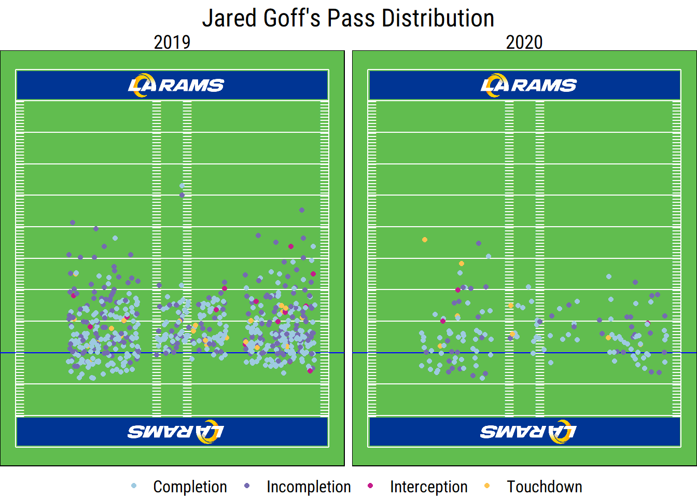

I created this site explore some of my favorite topics with R. With the 2020 NFL season underway, my initial focus is on football analytics and my favorite team, the LA Rams. I’m new to sports analytics, so I’m looking forward to learning as I go and hopefully stumbling across some insights along the way.
The Rams entered the 2020 season with a lot of question marks, but perhaps the biggest was Jared Goff. Quarterback play is essential to modern NFL teams- the average passing play through five weeks in 2020 has gained 6.6 yards, while the average run has gained just 4.5, according to nflfastR data. That’s an efficiency advantage of almost 50%. In particular, the Rams just jettisoned All-Pro running back Todd Gurley, further increasing the load on Goff’s $134 million shoulders. The Rams can’t return to the successful days of 2018 without Goff playing well, so I decided analyzing his play is a good way to begin.
The Rams have only dropped one game through the first five weeks of the season, albeit against fairly weak competition. Goff has been quite productive as a part of the Rams successful offensive scheme. He’s played well behind a much-improved offensive line, gotten the ball out quickly to his talented receiving core, and avoided making major mistakes. Goff hasn’t looked like one of the top quarterbacks in the league, but has played well enough bring the Rams back into contention in the NFC. His play has definitely improved since the 2019 season, but what’s responsible for the recent success?
A peek of Goff’s high-level stats is a good start to understanding how his play has evolved this year. Before getting into those, it’s necessary to import the data I’ll be using. The main data source for this post (and future ones) will be play-by-play data available through the nflfastR package. This is a fantastic data source, and I wouldn’t be able to do much NFL analytics without it. I’ll also supplement it with data from the NFL’s Next Gen Stats (NGS), conveniently scraped and available on Github from mrcaseb. I imported the data from both sources for the years Goff has been active in the league, below.
library(tidyverse)
options(dplyr.summarise.inform = FALSE)
library(nflfastR)
library(here)
career <- c(2016:2020)
passing_pbp <- map_df(career, function(x) {
readRDS(url(
paste0("https://raw.githubusercontent.com/guga31bb/nflfastR-data/master/data/play_by_play_", x, ".rds")
)) %>%
mutate(year = x)
}) %>%
filter(
week <= 5,
play_type == "pass",
qb_kneel == "0",
qb_spike == "0"
)
ngs_data <- map_df(career, function(x) {
readRDS(here("content", "post", "goff-short-passing", "Data", paste0("ngs_", x, "_passing.rds")))
})The table below shows some of Goff’s most important stats since entering the league in 2016, with a focus on efficiency rather than total output. All of the data is originally from NGS, besides average expected points added (EPA) per passing play, which was calculated using nflfastR. Key stats from NGS include Goff’s completion percentage, touchdown to interception ratio, completion percentage over expected (CPOE), and passer rating.
library(reactable)
library(htmltools)
ngs_goff <- ngs_data %>%
filter(week == 0) %>%
select(
player_last_name, season, pass_yards:passer_rating, completion_percentage,
completion_percentage_above_expectation
) %>%
mutate(
`Comp %` = round(completion_percentage, digits = 1),
Yds = pass_yards,
TD = pass_touchdowns,
Int = interceptions,
CPOE = round(completion_percentage_above_expectation, digits = 1),
PR = round(passer_rating, digits = 1),
.keep = "unused"
) %>%
group_by(season) %>%
arrange(desc(PR)) %>%
mutate(pr_rank = row_number()) %>%
arrange(desc(CPOE)) %>%
mutate(cpoe_rank = row_number()) %>%
filter(player_last_name == "Goff") %>%
mutate(
PR = paste0(PR, " ", "(", pr_rank, ")"),
CPOE = paste0(CPOE, " ", "(", cpoe_rank, ")")
) %>%
select(-pr_rank, -cpoe_rank)
passing_pbp %>%
filter(season_type == "REG") %>%
select(year, passer_player_name, epa, complete_pass, incomplete_pass, interception, touchdown) %>%
group_by(passer_player_name, year) %>%
mutate(
touchdown = ifelse(interception == 1, 0, touchdown), # pick 6's count as td's in this data
attempts = sum(c_across(complete_pass:touchdown))
) %>%
filter(attempts >= 128) %>%
summarise(epa = round(mean(epa), digits = 2)) %>%
group_by(year) %>%
arrange(desc(epa)) %>%
mutate(epa_rank = row_number()) %>%
filter(passer_player_name == "J.Goff") %>%
inner_join(ngs_goff, by = c("year" = "season")) %>%
mutate(
epa = paste0(epa, " ", "(", epa_rank, ")"),
`TD/Int` = round(TD / Int, digits = 1)
) %>%
select(Year = year, Player = passer_player_name, `Comp %`, `TD/Int`, CPOE, PR, `EPA/Play` = epa) %>%
arrange(Year) %>%
reactable(outlined = TRUE, striped = TRUE, highlight = TRUE, columns = list(
Player = colDef(cell = function(value) {
image <- img(src = sprintf("images/%s.jpg", value), height = "24px", alt = value)
tagList(
div(style = list(display = "inline-block", width = "45px"), image),
value
)
})
))Goff went 0-7 during his rookie campaign with a floundering Rams team, and his 2016 stats are his worst across-the-board. His stats picked up immediately after the arrival of Sean McVay, yet so far Goff has been best by nearly all of these measures in 2020. While it’s still early, the Rams passing game has clearly improved since 2019. The table also shows how Goff ranks in CPOE, passer rating, and EPA/play among NFL quarterbacks with at least 128 passing attempts. He’s never ranked highly in CPOE as modeled by NGS, but has fared much better in passer rating and EPA/play. Goff ranks 11th in the former and 5th in the latter in 2020. Goff isn’t completing many more passes than expected given factors such as wide receiver separation, pressure, and throw length, but his high rankings in the other measures indicates he’s performing better in other facets of the game.
# is completion already here somewhere?
goff_passing <- passing_pbp %>%
filter(
passer_player_name == "J.Goff",
season_type == "REG",
sack == "0"
) %>%
mutate(
completion = ifelse(incomplete_pass == 0, 1, 0),
target_percent = 1 / n()
) %>%
select(week, year, down, completion, yards_gained, yards_after_catch, air_yards, pass_length, qb_epa, receiver_player_name, receiver_jersey_number, cp, cpoe, penalty, touchdown, interception, qb_hit, success, target_percent)One aspect of the Ram’s passing scheme that I’ve noticed this year is their reliance on short passing. At least from my observations, they’ve relied much more on short passes that generate yards after catch (YAC) than in previous years. The lack of deep balls from Goff has been highlighted by others as well. The rest of this post will be focused on how Goff’s pass selection has evolved in 2020. First, it’s important to compare the Rams reliance on short passing to the rest of the league. The code below creates a figure that shows the relationship between YAC and air yards (the distance beyond the line of scrimmage the pass travels to the receiver).
library(ggimage)
library(teamcolors)
library(extrafont)
team_logos <- teams_colors_logos %>% select(team_abbr, team_logo_espn)
passing_pbp %>%
filter(
year == 2020,
is.na(air_yards) == FALSE
) %>% # sacks
select(desc, posteam, air_yards, yards_after_catch, yards_gained, passer_player_name) %>%
# mutate(yards_after_catch= replace_na(yards_after_catch, 0)) %>% #YAC per pass
group_by(posteam) %>%
summarise(
air_yards = mean(air_yards),
yards_after_catch = mean(yards_after_catch, na.rm = TRUE)
) %>%
inner_join(team_logos, by = c("posteam" = "team_abbr")) %>%
ggplot(aes(x = air_yards, y = yards_after_catch)) +
geom_image(aes(image = team_logo_espn), size = 0.05, asp = 16 / 9) +
geom_hline(aes(yintercept = mean(yards_after_catch)), color = "#003594", linetype = "dashed") +
geom_vline(aes(xintercept = mean(air_yards)), color = "#003594", linetype = "dashed") +
theme_bw() +
labs(
x = "AY/Pass",
y = "YAC/Comp",
title = "Distribution of NFL Passing Yards (2020)",
caption = "Weeks 1-5. Data: @nflfastR"
) +
theme(
text = element_text(family = "Roboto Condensed"),
plot.title = element_text(hjust = 0.5, size = 16),
plot.subtitle = element_text(size = 12),
axis.title = element_text(size = 13),
axis.text = element_text(size = 12),
legend.text = element_text(size = 12)
)
It’s clear that there’s an inverse relationship between a team’s average YAC and air yards. The figure also confirms that Goff is relying on short passes so far this season. He averages just above 6 air yards per pass, which is only higher than the Saints, perhaps because Drew Brees cannot physically throw the football 10 yards. However, the Rams are getting an league high average of 7 YAC per completion, over half a yard ahead of the next closest team. The evidence couldn’t be stronger that the Rams pass attack is built around YAC, but how similar is this to past seasons? The code below shows the breakdown between long and short completions throughout Goff’s career.
library(reactable)
library(htmltools)
passing_pbp %>%
filter(
passer_player_name == "J.Goff",
sack == 0,
season_type == "REG",
two_point_attempt == 0
) %>%
mutate(
IAY = air_yards,
air_yards = ifelse(incomplete_pass == 1 | interception == 1, NA, air_yards),
yards_gained = ifelse(incomplete_pass == 1 | interception == 1, NA, yards_gained)
) %>%
select(desc, Player = passer_player_name, yards_gained, air_yards, yards_after_catch, pass_length, Year = year, IAY) %>%
group_by(Year, Player) %>%
summarise(
Completions = n(),
`Avg. IAY` = round(mean(IAY), digits = 1),
`AY/C` = round(mean(air_yards, na.rm = TRUE), digits = 1),
`YAC/C` = round(mean(yards_after_catch, na.rm = TRUE), digits = 1),
`Yds/C` = round(mean(yards_gained, na.rm = TRUE), digits = 1)
) %>%
reactable(outlined = TRUE, striped = TRUE, highlight = TRUE, columns = list(
Player = colDef(cell = function(value) {
image <- img(src = sprintf("images/%s.jpg", value), height = "24px", alt = value)
tagList(
div(style = list(display = "inline-block", width = "45px"), image),
value
)
})
))The table shows two types of air yards: completed air yards and intended air yards, which includes completed air yards and the potential air yards from incomplete passes. It also shows the Rams YAC per completion and total yards per completion. Goff’s winless 7-game rookie season is once again an outlier. In 2020, his completions have been about a yard shorter through the air compared to his average over the previous three seasons, but they’re gaining about an extra yard after the catch. The biggest change is in his intended air yards, though, which have declined 25% compared to average.
Finally, I wanted to see if Goff has been throwing to different areas of the field. In addition to pass yardage data, nflfastR also has indicators for whether the pass was thrown to the right, left, or middle of the field. This isn’t as strong as data that pinpoints the location of a catch on the field, but is still interesting. Mainly, I had a lot of fun messing around with ggplot2 to create a nice facsimile of a football field for my scatter plot. I used the code from the Big Data Bowl as a starting point and found an image via Google to serve create my endzone.
passes_2020 <- passing_pbp %>%
filter(
year >= 2019,
passer_player_name == "J.Goff",
sack == 0,
season_type == "REG",
two_point_attempt == 0
) %>%
mutate(
field_position = case_when(
pass_location == "left" ~ 15,
pass_location == "middle" ~ 30,
pass_location == "right" ~ 45
),
complete = ifelse(incomplete_pass == 0 & touchdown == 0, 1, 0),
air_yards = air_yards + 30
) %>% # adjustment for plot
select(incomplete_pass, interception, touchdown, air_yards, field_position, year) %>%
mutate(
result = case_when(
incomplete_pass == 0 & interception == 0 & touchdown == 0 ~ "Completion",
incomplete_pass == 1 ~ "Incompletion",
interception == 1 ~ "Interception",
touchdown == 1 ~ "Touchdown"
),
.keep = "unused"
)result_colors <- c("#9ecae1", "#756bb1", "#c51b8a", "#fec44f")
endzone <- data.frame(
x = 160 / 3 / 2,
y = 115,
image = sample(here("content", "post", "goff-short-passing", "Images", "rams_endzone.png"))
)
opp_endzone <- data.frame(
x = 160 / 3 / 2,
y = 5,
image = sample(here("content", "post", "goff-short-passing", "Images", "opposite_end.png"))
)
yard_markers <- data.frame(
x = c(rep(0, 13)),
y = c(seq(0, 120, by = 10)),
xend = c(rep(160 / 3, 13)),
yend = c(seq(0, 120, by = 10))
)
sidelines <- data.frame(
x = c(0, 160 / 3),
y = c(0, 0),
xend = c(0, 160 / 3),
yend = c(120, 120)
)
hash_right <- 38.35
hash_left <- 12
hash_width <- 50
hash <- expand.grid(x = c(0, 23.36667, 29.96667, 53.3), y = (10:110))
ggplot() +
ylim(0, 120) +
xlim(0, ((160 / 3))) +
geom_segment(data = sidelines[1, 1:4], mapping = aes(x = x, y = y, xend = xend, yend = yend), color = "white") +
geom_segment(data = sidelines[2, 1:4], mapping = aes(x = x, y = y, xend = xend, yend = yend), color = "white") +
geom_segment(data = yard_markers, aes(x = x, y = y, xend = xend, yend = yend), color = "White") +
geom_hline(yintercept = 30, color = "blue") +
geom_image(endzone, mapping = aes(x, y, image = image), size = 0.9) +
geom_image(opp_endzone, mapping = aes(x, y, image = image), size = 0.9) +
theme_void() +
labs(
color = "",
title = "Jared Goff's Pass Distribution"
) +
scale_color_manual(values = result_colors) +
annotate("text",
x = hash$x[hash$x < 55 / 2],
y = hash$y[hash$x < 55 / 2], label = "_", hjust = 0, vjust = -0.2, color = "white"
) +
annotate("text",
x = hash$x[hash$x > 55 / 2],
y = hash$y[hash$x > 55 / 2], label = "_", hjust = 1, vjust = -0.2, color = "white"
) +
geom_jitter(passes_2020, mapping = aes(x = field_position, y = air_yards, col = passes_2020$result)) +
theme(
panel.background = element_rect(fill = "#61bd4f"),
text = element_text(family = "Roboto Condensed"),
plot.title = element_text(hjust = 0.5, size = 18),
strip.text = element_text(size = 14),
legend.position = "bottom",
legend.text = element_text(size = 12)
) +
facet_wrap(~year)
Again, it should be noted that while the vertical distance is accurate, the lateral distance shown in the figure above is not. Variation within the three quadrants referenced in the previous paragraph is just a result of the geom_jitter function. All pass lengths were shown from a line of scrimmage at the 20 yard line (marked with a blue line). The scatter plot shows more passes around and behind the line of scrimmage in 2020 than 2019, and it will be interested to compare the two again at the end of the season. At the moment, the figure was more of a fun than useful exercise.
It will be interesting to see how the Rams passing game evolves throughout the season. Will Goff start throwing deeper passes as defenses adjust to their YAC-heavy passing game? If not, does he have what it takes to adjust to defensive schemes built to counter it? If the Rams offense can maintain its success as divisional play begins this week against the 49ers, they’ll be in a good position to make another post-season run (note from the future: they did not).
This post just scratches the surface of what can be done with nflfastR and other available NFL data. It was a good initial look at the Rams passing game and a good way to get acquainted with the data. I plan to explore a lot more about the Rams passing game, and other NFL topics, in the future. Topics I’m interested about looking at in the future include:
{kind=link}